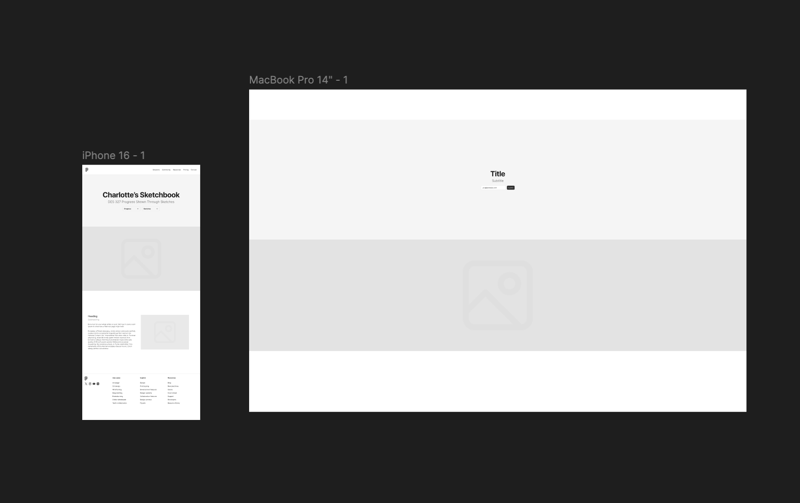

For my first try at Figma, I was really just trying to learn the software. I tried to make simple, easy to navigate pages that would work well with the content I already have. The big thing I tried to focus on was making my navigation easier to use. By implementing dropdown menus, I could have one for my sketches and one for my other progress checks, reading responses, etc. This was an improvement from my original site because the way I had set it up was a bit confusing as everything was located in a strange place. Instead, the new landing page has everything visible and labeled. However, what I had pictured originally was more of a side bar menu with new ones that open within that "window". A good example of this is a clothing site where if you were to click on women's clothes from the menu, it opens within that to have the options for tops, bottoms, etc.
The downside to this layout is I don't have enough content to fill this out yet. It requires some photos, more links and text. This will likely be fixed because as we go, I'm sure we will have more pages to include and I'll create some other elements to fill out the space. I think that for the coming iterations, I will need to decide more on what goes where and how that changes from desktop to mobile. In addition, I need to learn more about Figma and how it works, so I can create more in depth site ideas. Overall, my site needs direction and clarity so the user is able to navigate without thinking too much. If too much thought is required, the page may be deemed unusable and deter people. Hopefully, I will find a clearer solution to make my site better.